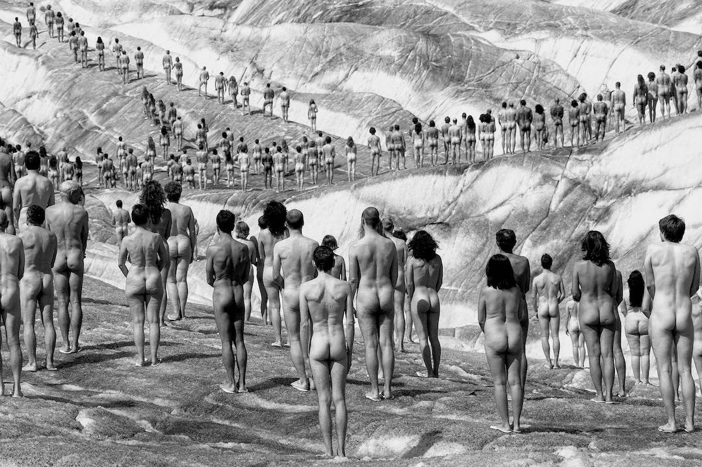

Projecte
The Climate Game

© Spencer Tunick | Aletsch, Alps
«The Climate Game» és un experiment pop-up que ens permet estudiar com cooperen els individus per fer front a un risc col·lectiu com el canvi climàtic. Proposem un dilema social clàssic basat en la teoria de jocs cooperatius, un joc de béns públics, al voltant de les negociacions per abordar el canvi climàtic, en què les desigualtats entre els actors tenen el paper principal. Els resultats de l'experiment, publicats a PlosOne, van revelar que les desigualtats al voltant de les negociacions sobre el canvi climàtic afecten més durament els individus, les societats i les organitzacions amb pocs recursos, que són, alhora, els que mostren nivells de cooperació més alts en termes relatius.
En aquest projecte, utilitzem una versió gamificada primerenca de la plataforma Citizen Social Lab per recollir les interaccions dels ciutadans, i apliquem principis de ciència participativa per implicar els ciutadans en activitats científiques. L'experiment principal es va dur a terme al festival DAU, on 324 persones van contribuir amb les seves accions, i gairebé 200 persones van participar en les dues rèpliques de l'experiment al carrer. La plataforma, els resultats científics, les dades i els codis estan disponibles públicament seguint els principis de la ciència oberta.
Actualitzacions
01/11/18 Publicació al blog
Publicació al blog amb un resum del resultat principal de la recerca.
31/10/18 Publicació de l'article a PlosOne
Vicens, J., Bueno-Guerra, N., Gutiérrez-Roig, M., Gracia-Lázaro, C., Gómez-Gardeñes, J., Perelló, J., Sanchez, A., Moreno, Y. & Duch, J. (2018). «Resource heterogeneity leads to unjust effort distribution in climate change mitigation». PLoS ONE; 13(10):10.1371/journal.pone.0204369.
31/10/18 Codis oberts
Els codis de l'article: Vicens, J. et al. (2018). «Resource heterogeneity leads to unjust effort distribution in climate change mitigation». es poden trobar en aquest repositori.
31/10/18 Dades obertes
El conjunt de dades de l'article: Vicens, J. et al. (2018). «Resource heterogeneity leads to unjust effort distribution in climate change mitigation». es pot trobar en aquest repositori.
08/09/17 Preprint a arXiv
Vicens, J., Bueno-Guerra, N., Gutiérrez-Roig, M., Gracia-Lázaro, C., Gómez-Gardeñes, J., Perelló, J., Sanchez, A., Moreno, Y. & Duch, J. (2017). «Resource heterogeneity leads to unjust effort distribution in climate change mitigation». arXiv:1709.02857.
23/12/15 Experiment al Convent de Sant Pere
Rèplica de l'experiment al Convent de Sant Pere amb la participació de 42 persones.
22/12/15 Experiment a Orlandai
Rèplica de l'experiment a Casa Orlandai amb la participació de 60 persones.
12-13/12/15 Experiment al festival DAU
Realització de l'experiment principal al festival DAU durant el cap de setmana del 12 i 13 de desembre amb la participació de 324 persones.